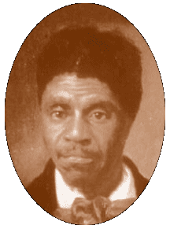

|
Dred
Scott Case

...argued before the U.S. Supreme Court in 1856–57. It involved
the then bitterly contested issue of the status of slavery in the
federal territories. In 1834, Dred Scott, a black slave, personal
servant to Dr. John Emerson, a U.S. army surgeon, was taken by his
master from Missouri, a slave state, to Illinois, a free state,
and thence to Fort Snelling (now in Minnesota) in Wisconsin Territory,
where slavery was prohibited by the Missouri Compromise. There he
married before returning with Dr. Emerson to Missouri in 1838.
After
Emerson’s death, Scott sued (1846) Emerson’s widow for
freedom for himself and his family (he had two children) on the
ground that residence in a free state and then in a free territory
had ended his bondage. He won his suit before a lower court in St.
Louis, but the Missouri supreme court reversed the decision (thus
reversing its own precedents). Scott’s lawyers then maneuvered
the case into the federal courts.
Since J. F. A. Sanford, Mrs. Emerson’s brother, was the legal
administrator of her property and a resident of New York, the federal
court accepted jurisdiction for the case on the basis of diversity
of state citizenship. After a federal district court decided against
Scott, the case came on appeal to the Supreme Court. In Feb., 1857,
the court decided in conference to avoid completely the question
of the constitutionality of the Missouri Compromise and to rule
against Scott on the ground that under Missouri law as now interpreted
by the supreme court of that state he remained a slave despite his
previous residence in free territory.
However, when it became known that two antislavery justices, John
McLean and Benjamin R. Curtis, planned to write dissenting opinions
vigorously upholding the constitutionality of the Missouri Compromise
(which had, in fact, been voided by the Kansas-Nebraska Act of 1854),
the court’s Southern members, constituting the majority, decided
to consider the whole question of federal power over slavery in
the territories. They decided in the case of Scott v. Sandford (the
name was misspelled in the formal reports) that Congress had no
power to prohibit slavery in the territories, and Chief Justice
Roger B. Taney delivered the court’s opinion that the Missouri
Compromise was unconstitutional. Three of the justices also held
that a black “whose ancestors were … sold as
slaves” was not entitled to the rights of a federal citizen
and therefore had no standing in court. The court’s verdict
further inflamed the sectional controversy between North and South
and was roundly denounced by the growing antislavery group in the
North.
Top
|
 |